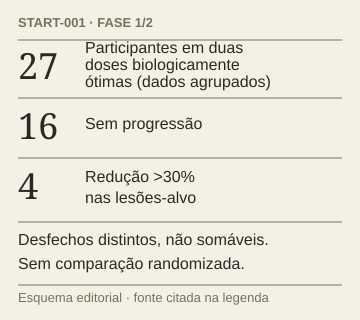

Pesquisa · Notícia
Imunoterapia seletiva apresenta sinal inicial em tumores resistentes
Ensaio pequeno identifica atividade do invikafusp alfa, mas ainda não demonstra benefício comparativo de sobrevida.
O invikafusp alfa apresentou sinais iniciais de atividade em tumores sólidos avançados, muitos resistentes à imunoterapia. O START-001 avalia segurança, dose e resposta; o artigo reúne 34 participantes na fase 1 e 18 no início da fase 2.
Entre 27 participantes das duas fases tratados nas doses biologicamente ótimas, 16 não tiveram progressão e quatro apresentaram resposta objetiva. Esse grupo reúne duas doses, não apenas a dose selecionada para a fase 2. A proteína estimula subgrupos específicos de linfócitos T.
A síndrome de liberação de citocinas foi o evento adverso relacionado ao tratamento mais comum, predominantemente de graus 1 e 2. Dois participantes tiveram toxicidades limitantes de dose reversíveis.

Ilustração vetorial original • THE MED TIMES • assistência de IA · Fonte ↗ · Ampliar ↗
Data da fonte · 23.10.2026 · 1 min de leitura
Ler matéria →